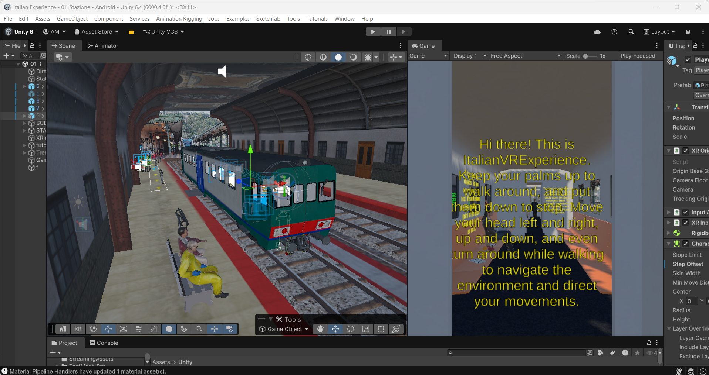
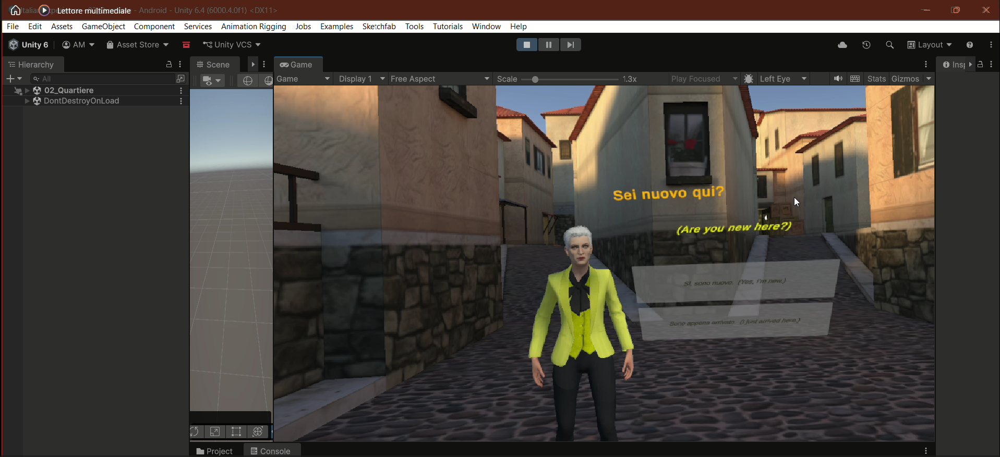
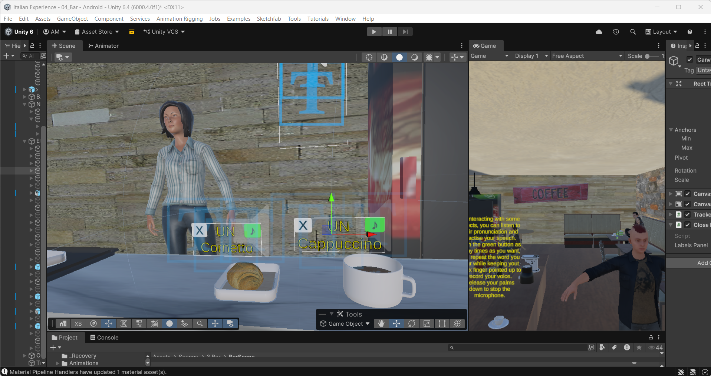
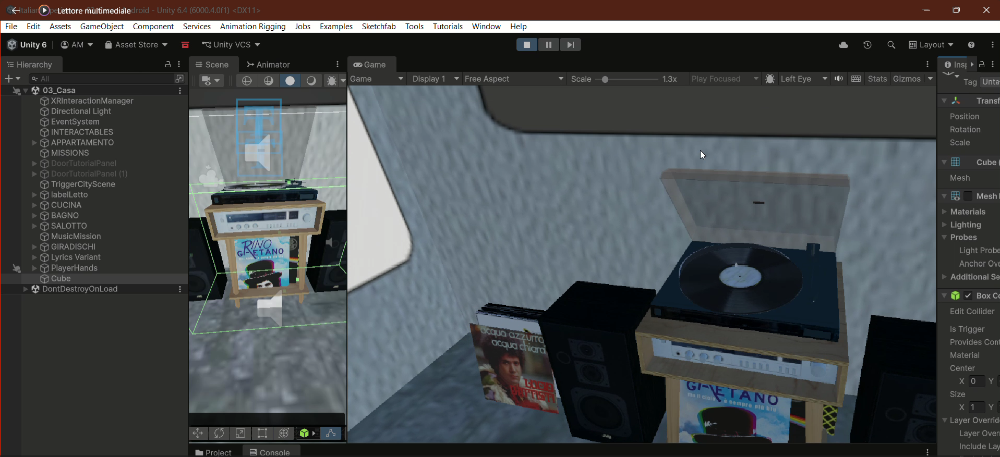

I design, build and test immersive experiences that teach something.
Master's degree in Digital Humanities (University of Pisa, 109/110) on top of a degree in foreign languages. My thesis project, ItalianVRExperience, is a complete Unity VR game that teaches Italian to absolute beginners, validated with a user study on 15 participants.
I am most useful where design, development and research meet: turning a learning goal into a scene people can act in, building it, and finding out whether it worked.
A VR game for Meta Quest 2 where the language is never the subject of an exercise: it is the tool for getting around an Italian town. Master's thesis, 2025 to 2026, implemented as a visiting student at the Institute of Mechanical Intelligence, Scuola Superiore Sant'Anna.
Unity 6, C#, XR Hands, Whisper, Ollama / Mistral, Blender. Supervisors: Prof. Marcello Carrozzino and Prof. Mirko Tavosanis. Design-based research.
The problem
Beginner language courses teach phrases out of context, so learners recognise words on a test and freeze when a ticket inspector actually asks for their ticket. VR can put the learner inside the situation, but most language apps in VR still look like flashcards with a 3D background.
Who it is for
Adult English speakers with no prior Italian. The syllabus is a survival A1 repertoire built from the Profilo della lingua italiana, with the focus on speaking rather than reading.
The design
The player arrives in Bellavalle, an imaginary Italian town, and has to use Italian to solve four everyday situations. Each scene teaches a small set of formulas through an action the player physically performs.

Station. Onboarding on the train. The player hands the ticket to the inspector with their own hand.

Neighbourhood. Meeting Lina, the neighbour. The game captures the player's name by voice, subtitles on.

Bar. Ordering at the counter with plausible distractors, no translation, listen-and-repeat labels.

Home. Free exploration of descriptive vocabulary, plus a record player with an animated song transcription.
Decisions that mattered
No controllers. Hand tracking with custom gestures for moving, grabbing, selecting, inventory and push-to-talk, so that handing over a ticket feels like handing over a ticket.
Speech recognition runs locally. Whisper (ggml-small) on device, with tolerant text matching and a sound cue for turn-taking, so the dialogue keeps going even when pronunciation is off.
The AI tutor cannot make things up. A local LLM (Ollama / Mistral) is used only to understand what the learner is asking; the answers come from hand-verified grammar and vocabulary databases.
Measure behaviour, not just answers. An automatic logger records what the player says and does (CSV), alongside a post-test.
What I built
The whole prototype: scene design and assembly (Asset Store and Sketchfab models fixed in Blender, Mixamo animations, ElevenLabs voices), the dialogue system with NPC trees and an event bus, persistent game state, the speech and tutor integration, the logger, and the study design.
Gameplay, 29 seconds.
Results
User study with 15 English-speaking absolute beginners, one 30-minute session each, post-test only, exploratory.
86%post-test accuracy (12.1 of 14 items)
86.7System Usability Scale, out of 100
4.36presence (Slater-Usoh-Steed), out of 5
62%speech recognised at first attempt
The best remembered formulas were the ones tied to a physical action, such as handing over the ticket.
Whisper keeps the conversation going but is not a pronunciation judge: the non-rhotic /r/ is often silently normalised to the Italian spelling. Agreement with a native listener was 81%.
Behavioural logs and the post-test measure different things (speaking versus recognising), so they complement each other rather than replace each other.
What I would do next
A pre-test and a control group, a pronunciation feedback layer that does not rely on Whisper alone, and more scenes built on the same dialogue system, which was designed to take new content without new code.
Work from my master's degree that shows the other sides of the same job: interface design, content design, user research, data and language.
Job Tracker: a mobile app designed in Figma and built in code
Figma, HTML, CSS, JavaScript, Claude Code. Personal project, November 2026.
When you apply to many jobs, the status of each one ends up scattered across emails, tabs and notes. I wanted one small place that shows every application, the stage it is at and what to do next, with a first screen that asks nothing from the user.
In Figma I started from a small design system: variables for colour, spacing and radius, text styles, and components with variants such as the status chip. The four screens are built from those components. The welcome cover collapses into the list header with a single swipe up, so the app opens on a greeting and a one line summary and moves into the list in one gesture. I removed the tab bar because it duplicated the Add application button.
I then built the prototype in code with Claude Code. The Figma variables are exported as CSS custom properties, so design and code share the same tokens. It works as a real app: you can add an application, choose its status, change it later and keep notes, and everything is saved in the browser. Accessibility was part of the brief: labelled fields, full keyboard use, a tap as an alternative to the swipe, and support for reduced motion. The data lives only in the browser, so a backend would be the next step.
Unity, C#, Blender, Mixamo, GitHub. Personal fan project inspired by the fictional game in the animated series BoJack Horseman.
The original joke game is a Tetris-like with a Viking on the cover, so I took both literally: a Viking unexpectedly turns into a Tetris-shaped block and gets trapped inside the game, and the player completes the levels to get him out. I designed and assembled the 3D environment, adapted the character (textures and materials edited in Blender, animations from Mixamo), fixed FBX meshes, and wrote the gameplay, player interaction and level progression in C#.
Course content for an Erasmus+ project on AI and sustainable design
DETAILLs Living Lab, University of Pisa, March to July 2025, 150-hour internship, supervisor Prof. Filippo Chiarello
The DETAILLs consortium (Pisa, Zagreb, Salamanca) was building a curriculum on AI-driven sustainable design. I produced the actual course content for what has since become the university course Artificial Intelligence for Sustainability: video lectures, infographics and interactive Tableau maps integrated into the e-learning platform, grounded in a literature review on serious games, AI and sustainable design. Weekly seminars with the partners, in English, with Moodle and GitHub as the shared tools.
User research for emerging musicians: a desirability and feasibility study
Project Design and Management for Data Science, 2024, with M. Radojicic
Starting from the visibility problem of emerging musicians, we ran a full cycle: interviews and a survey, five personas with empathy maps, need prioritisation with a scoring matrix, then three candidate solutions validated by pretotyping. An A/B test of physical versus digital concert postcards, read through the Fogg Behaviour Model and an Ishikawa analysis, pointed to digital postcards with QR-linked content as the highest-payoff, lowest-difficulty option.
Data journalism, Tableau, 2024, with G. Fidone (data) and V. Galli (graphics)
A multimedia article that takes apart the idea of the Mediterranean diet as an automatically healthy model, using IHME data on dietary risk factors in Italy. Interactive Tableau dashboards embedded in the page, an original interview with a nutrition expert, and the historical framing from Ancel Keys to today's national marketing.
How good is machine translation from Russian to Italian?
Italian Linguistics, 2025, Prof. Mirko Tavosanis
Google Translate, DeepL and ChatGPT-4 compared on an institutional news text, with automatic metrics (BLEU, F-Measure, TER) and a blind qualitative grid covering semantic fidelity, register and formal correctness. ChatGPT-4 came out most natural in style, DeepL most balanced in terminology, Google Translate penalised by literal calques.
Digital pantry managerPython, from a procedural script to an object-oriented system with a Tkinter interface, automated tests and explicit exception handling. Code on GitHub
Unveiling the complexities of artificial intelligenceCritical essay on the limits of AI systems in ethical decisions: DARPA's three waves, black-box opacity, documented cases of algorithmic bias. Essay (PDF)
Skills
What I can do today, grouped by the part of the job it belongs to.
XR and 3D
Unity 6: scenes, interaction, UI, VR builds
XR Hands, OpenXR, Meta Quest 2
C# for game logic, with AI-assisted development
Blender (intermediate)
Whisper and Ollama, running locally
Design and research
Interface design in Figma: components, variables, prototyping
Learning experience design
Design-based research
User studies: SUS, presence, post-tests
Interviews, surveys, personas, A/B tests
Perceptual evaluation of speech recognition
Content and data
Video lectures, infographics, e-learning content
Tableau dashboards and maps
Python (procedural and object-oriented)
HTML, CSS, basic JavaScript
Adobe Creative Suite, Google Analytics
Languages
Italian, native
English, C1
Russian, B2
French, A2
Dutch, beginner, learning
Master's degree in Digital Humanities, University of Pisa, 2026, 109/110 (Informatica Umanistica, LM-43)
Bachelor's degree in Foreign Languages and Literatures, University of Pisa, 2021, 100/110 (Russian, English, French)